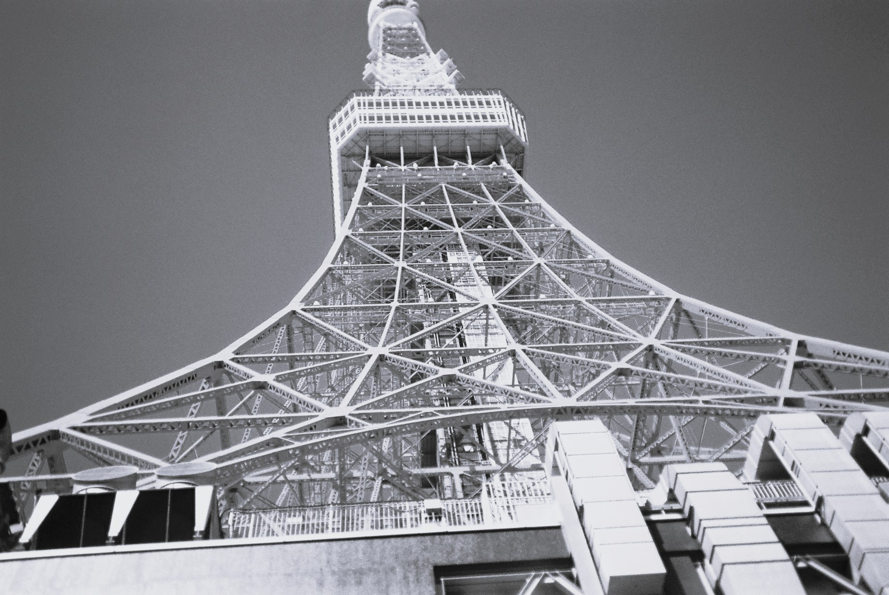

東京へ行った2024年11月
こちらが東京旅行へ行った際の東京シャワーの写真です。
白黒に加工しました。

東京タワーの歴史と魅力
東京タワーは、東京都港区芝公園にある総合電波塔です。
正式名称は「日本電波塔」といい、1958年12月23日に完成しました。
高さは333メートルで、完成当時は世界で最も高い自立式鉄塔でした。
東京タワーが建設された大きな目的は、テレビやラジオの電波を送信することです。
1950年代の日本では、テレビ放送が普及し始めていました。
複数の放送局がそれぞれ電波塔を建設するよりも、高い塔に送信設備をまとめることで、効率よく電波を届けられるようになりました。
東京タワーの特徴といえば、赤と白に塗り分けられた美しい姿です。
これは航空法などに基づく航空機への安全対策によるものです。
また、夜になるとライトアップされ、季節やイベントに合わせてさまざまな色に輝きます。
東京タワーには展望台もあり、東京の街並みを高い場所から眺めることができます。
晴れた日には、遠くの山々まで見渡せることもあります。
2012年には、高さ634メートルの東京スカイツリーが完成しました。
東京タワーは日本一の高さではなくなりましたが、現在も東京を代表する観光名所として、多くの人々に親しまれています。放送技術の発展を支えた歴史的な建造物であり、日本の高度経済成長期を象徴する存在でもあります。